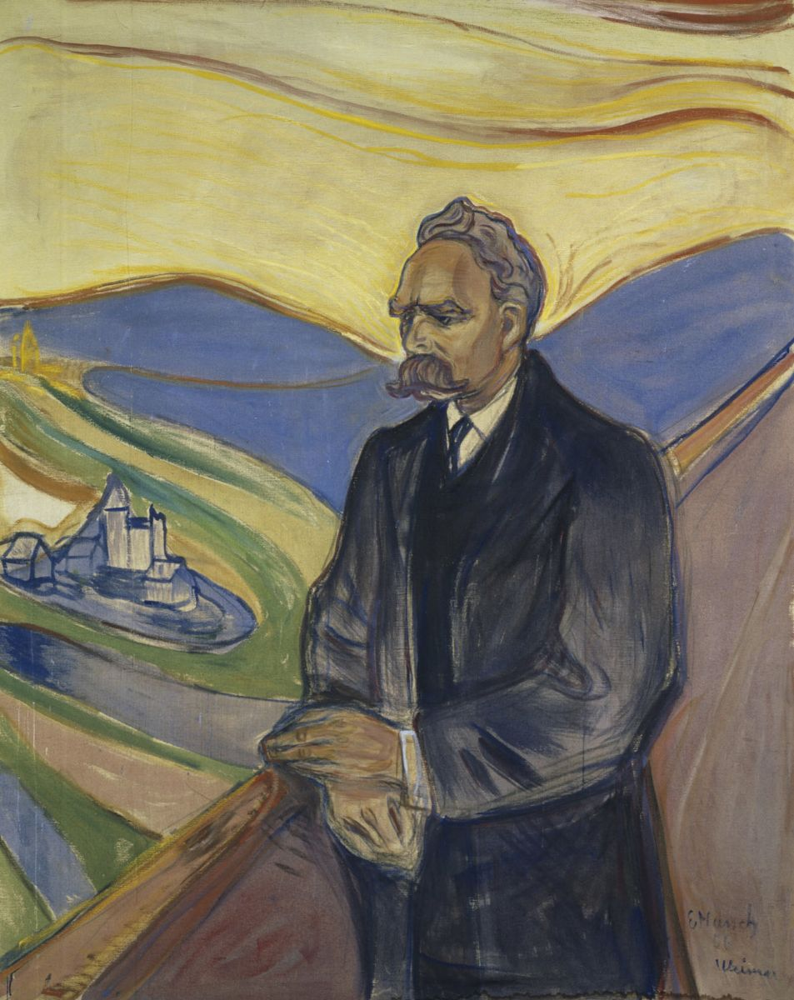

Summary
Why question the virtues?
A Christian writer imagines watching his persecutors burn and looks forward to the pleasure. Nietzsche quotes Tertullian's On the Shows, chapter 30, in the Genealogy, First Essay, section 15. He wants to know how much revenge can survive inside a religion that teaches love of enemies.
Nietzsche asks what a value does for the people who hold it. Humility might help someone learn, or make an inability to act feel virtuous. He investigates how moral judgments arose and whether living by them helps human beings flourish.
Beyond Good and Evil (1886) challenges the assumptions of philosophers, including their faith that truth must always be worth pursuing. On the Genealogy of Morals (1887) develops three investigations: the change from good/bad to good/evil, the formation of guilt and bad conscience, and the appeal of the ascetic ideal, which gives suffering a purpose through self-denial. The earlier Gay Science and Thus Spoke Zarathustra supply the death of God, eternal recurrence, and the overman. Dates and works.
His histories are often speculative. His judgments are openly unequal: he cares especially about exceptional creators and fears that a morality meant for everyone will prevent them from developing.

Stop 1 / The Gay Science, 1882
What the atheists haven't noticed
Walter Kaufmann / The Gay Science, section 125
"God is dead. God remains dead. And we have killed him. How shall we comfort ourselves, the murderers of all murderers?"
A madman brings a lantern to a marketplace in daylight. His audience already disbelieves in God. They laugh at his search, but he thinks they barely understand the consequences.
Belief in the Christian God had supported an account of why the world exists and what people owe each other. Scientific inquiry and historical criticism have helped undermine that belief among Nietzsche's intended readers. The madman asks what happens to the values built on it. He ends by saying he has arrived too early.
In section 343, added in 1887, Nietzsche gives the event a second mood. Free spirits can welcome the opportunity it creates while recognizing the upheaval ahead. His response includes anticipation as well as grief.
Keeping Christian moral conclusions after rejecting Christian belief requires justification. Nietzsche challenges the assumption that the values can stand once their foundation is rejected. He has not established that secular morality is impossible.
Stop 2 / Beyond Good and Evil, 1886, section 260
Who gets to call something good?
Walter Kaufmann / Beyond Good and Evil, section 260
The noble type of man experiences itself as determining values; it does not need approval; it judges, "what is harmful to me is harmful in itself"; it knows itself to be that which first accords honor to things; it is value-creating.
Nietzsche distinguishes two patterns of valuation. In master morality, a ruling group calls its own qualities good. Courage, pride, and generosity express its sense of abundance. Bad is the secondary term for what it looks down on: the ordinary, timid, or dependent. Good/bad marks rank and distinction.
Slave morality begins among people exposed to the power of others. It praises qualities that make that situation bearable, including patience, helpfulness, and humility. Dangerous power becomes evil; harmlessness becomes good. One pattern starts with esteem for itself; the other starts with condemnation of an enemy.
These types can mix within one culture and even within one person; Nietzsche says so at the start of section 260. They don't divide everyone into a strong or weak camp.
The same passage praises self-command and says nobles can help the unfortunate from an excess of strength. Nietzsche also gives their contempt for inferiors considerable latitude. His alternative to moral equality assigns different worth to different people.
Stop 3 / On the Genealogy of Morals, 1887, First Essay
When resentment starts making values
Walter Kaufmann and R. J. Hollingdale / First Essay, section 10
The slave revolt in morality begins when ressentiment itself becomes creative and gives birth to values: the ressentiment of natures that are denied the true reaction, that of deeds, and compensate themselves with an imaginary revenge.
Ressentiment is Nietzsche's borrowed French word for a persistent resentment that reorganizes someone's judgments. A person unable to retaliate imagines a moral order in which the successful enemy deserves punishment and the injured person deserves reward. Goodness is defined against the enemy.
The lambs and birds of prey in section 13 make the mechanism explicit. Lambs dislike being eaten and call the predators evil. Nietzsche then challenges the idea of a neutral self behind an action, freely choosing whether to express its strength. That imagined chooser lets the lambs claim moral credit for their harmlessness and blame the birds for being predatory.
The fable does not settle the human case. Nietzsche himself values self-command. Explaining action through a person's drives still leaves questions about how those drives can be trained, or why powerful people should be excused from restraint.
In section 14, inability to avenge oneself is renamed forgiveness.
Nietzsche places Jewish priestly valuation at the beginning of the revolt and Christianity at its wider triumph. That account is his polemical reconstruction, not established anthropology or an adequate history of either religion. In section 6 he also credits priestly valuation with developing human inwardness. The values he attacks have been creative themselves.
A resentful origin would not by itself show that a present rule is false or harmful. Protection from assault can be justified by the injury assault does, whatever first led people to condemn it. Nietzsche's broader case must therefore show what these values do to people now.
Stop 4 / On the Genealogy of Morals, Second and Third Essays
How suffering becomes a fault
Horace B. Samuel / Second Essay, section 16
All instincts which do not find a vent without, turn inwards [...]
The Second Essay asks how we became able to promise, incur obligations, and feel guilty. Nietzsche connects the German Schuld, guilt or debt, with Schulden, debts. His conjecture is that ideas of repayment and compensation helped form moral guilt. He imagines creditors receiving a right to inflict pain when a debtor cannot pay. This is a proposed history, not something established by the word's double meaning.
Bad conscience has a related but distinct explanation. Once society restrains outward aggression, Nietzsche proposes, aggressive drives turn against their owner. People become capable of cruelty toward themselves. In sections 19 to 22, indebtedness to ancestors develops into indebtedness to gods; Christianity's infinite God makes the debt seem impossible to discharge. Guilty self-punishment then becomes more than regret for a particular harm.
He doesn't say that punishment simply teaches guilt. In sections 14 and 15 he argues that punishment often teaches caution or hardens resistance instead. The question is how people come to condemn their own existence, rather than merely fear the consequences of an action.
The Third Essay examines the ascetic ideal, which gives self-denial a higher spiritual value. Its uses differ. A philosopher's solitude and restraint can support intellectual work. An ascetic priest gives suffering a different explanation: the sufferer is guilty and must seek redemption. The explanation supplies a purpose and a course of action, while deepening self-condemnation. Third Essay, sections 7 to 10 and 13 to 15.
People can endure suffering if it means something. In section 28 he says that "any meaning is better than no meaning." A doctrine hostile to bodily life can still preserve the will to go on living. Even an atheist may retain this ideal by treating truth as an unconditional sacred obligation; section 24 extends the investigation to intellectual life.
His related attack on pity asks whether helping always helps. In The Gay Science, section 338, the helper may misunderstand what suffering means within another person's life and remove a difficulty that matters to their development. But that possibility leaves a major gap: preventable agony can also destroy the capacities he values. An account of growth through suffering does not tell us which suffering should be relieved.
Stop 5 / Beyond Good and Evil, section 13
Power includes command over yourself
Walter Kaufmann / Beyond Good and Evil, section 13
A living thing seeks above all to discharge its strength, life itself is will to power; self-preservation is only one of the indirect and most frequent results.
Nietzsche's will to power describes striving to exercise and extend power, often through overcoming resistance. Survival and pleasure need not be the final goals: a demanding achievement may involve discomfort or risk. Achievement can matter more than comfort.
Power takes several forms in his writing. It includes organizing one's drives, giving shape to an artwork, and imposing an interpretation. It also includes domination and exploitation. Beyond Good and Evil, section 259, explicitly calls exploitation a basic function of living things. Personal improvement is only part of the claim.
Ressentiment and the ascetic priest also express will to power. They gain influence through moral judgments and the interpretation of suffering. Nietzsche can therefore think a system is successful at gaining power while condemning the kind of life it produces. Success alone does not make it admirable.
How widely he means to apply the theory is disputed. Beyond Good and Evil, section 36, proposes interpreting all effective force through will to power, but frames the proposal conditionally. It is a philosophical hypothesis, not an established result of biology or physics. The interpretive dispute.
Stop 6 / Thus Spoke Zarathustra, 1883 to 1885
Creating values after inherited authority
Walter Kaufmann / Zarathustra's Prologue, sections 3 and 4
I teach you the overman. Man is something that shall be overcome. What have you done to overcome him?
Man is a rope, tied between beast and overman, a rope over an abyss. [...] What is great in man is that he is a bridge and not an end.
Übermensch is translated as overman or superman. Zarathustra offers this figure as an ideal beyond the present human condition. He tells his audience to remain faithful to the earth and reject hopes of another world. The contrast in Prologue section 5 is the last man, who prizes comfort and security and no longer wants to attempt anything demanding.
The figure belongs to a philosophical story, rather than a manual with eligibility rules. Its relation to Nietzsche's other ideals remains disputed. It does not define an Aryan race. Yet it belongs to a philosophy committed to exceptional human types and rank.
Value creation elsewhere involves sustained discipline. Beyond Good and Evil, section 211, assigns philosophers the work of legislating values and directing a human future. The ambition reaches beyond private taste. Yet he leaves difficult questions about how their judgments gain authority and why other people should accept them.
Why overman and superman?
In Prologue section 3, Thomas Common writes "I teach you the Superman. Man is something that is to be surpassed." Kaufmann writes "overman" and "overcome." His pairing makes the shared German root easier to hear. Neither English word settles the figure's meaning, and a translation choice by itself cannot explain Nietzsche's political reception.
Stop 7 / The Gay Science, sections 341 and 276
Would you want this life again?
Walter Kaufmann / The Gay Science, section 341, "The greatest weight"
This life as you now live it and have lived it, you will have to live once more and innumerable times more; and there will be nothing new in it, but every pain and every joy and every thought and sigh and everything unutterably small or great in your life will have to return to you, all in the same succession and sequence [...]
A demon delivers this prospect. Nietzsche asks whether you would curse it or welcome it as divine. Eternal recurrence removes the possibility of editing the past or treating the present merely as preparation for a better world. The whole sequence would return, including the smallest details.
In this passage the idea works as a test of one's attitude toward life. Nietzsche also investigated recurrence as a cosmological proposal in his notebooks. Scholars disagree about its role across his work; section 341 supplies a hypothetical challenge rather than a scientific proof that the universe repeats. Recurrence and its interpretations.
Amor fati, love of fate, names a related aspiration. In section 276, Nietzsche writes: "I want to learn more and more to see as beautiful what is necessary in things." He presents affirmation, including what cannot be undone, as something he still has to learn.
A person can refuse to welcome an atrocity or want a traumatic experience repeated while still valuing life and making something worthwhile from it. Nietzsche's demand for affirmation is exceptionally high.
Stop 8 / The writings and their later use
What belongs to Nietzsche, and what followed
Walter Kaufmann / Letter to Elisabeth, dated Christmas 1887 in The Portable Nietzsche
It is a matter of honor with me to be absolutely clean and unequivocal in relation to anti-Semitism, namely, opposed to it, as I am in my writings.
Nietzsche opposed the antisemitic movement of his time and attacked German nationalism. Beyond Good and Evil, section 251, attacks antisemitic agitators while discussing Jewish strength. Yet the same section uses racial stereotypes and an assimilation framework. His Genealogy's account of Jews and the slave revolt also contains hostile generalizations. Opposition to an organized movement does not remove those from his work.
Other exclusions are explicit. In Beyond Good and Evil, sections 257 and 258, he links higher culture to aristocratic domination and accepts the sacrifice of many people to the development of a few. Sections 238 and 239 reject equal rights for women and describe women as property. Genealogy, Second Essay, section 7, makes racist and sexist claims about sensitivity to pain. These are defects in the texts themselves.
The late Antichrist, section 2, written in 1888, goes beyond indifference to weakness: it says the weak and failures should perish and be helped to do so. Its provocation cannot be translated into a gentle lesson about resilience. Readers dispute how to interpret such passages, but they remain part of his attack on equality and pity.
He suffered a mental collapse in Turin in January 1889 and died in 1900. His illness ended his productive career. His sister Elisabeth, who held antisemitic commitments, took control of his literary legacy. Life and literary estate.
The Will to Power was assembled after his collapse from notebook material. Nietzsche had planned a work with that title, but the compilation is not a finished book he authorized. Treating every note as a final doctrine erases the differences between experiments, abandoned plans, and works prepared for publication. The manuscript facsimiles and Colli and Montinari critical edition make those distinctions available to check.
Elisabeth and the archive promoted the nationalist appropriation of his reputation. Nazi philosophers and propagandists also actively shaped the reading, selecting usable themes and discounting his opposition to nationalism and antisemitism. The Nietzsche Archive's exhibition documents that process. The claim that Nietzsche simply caused Nazism is inadequate, as is the claim that all disturbing material was invented by his editors. His published elitism remains.
Editions and limits
Most excerpts use Walter Kaufmann: Beyond Good and Evil (1966), The Gay Science (1974), and Thus Spoke Zarathustra in The Portable Nietzsche (1954). The Genealogy, First Essay, excerpt is from Kaufmann and R. J. Hollingdale's joint translation (1967). The short Second Essay excerpt and Third Essay phrase use Horace B. Samuel's translation in the 1921 edition. Thomas Common supplies the brief Zarathustra comparison.
Excerpts preserve the translators' words while replacing long dashes with commas or periods and marking cuts with brackets. Interpretation is separate from quotation. Section numbers identify the passages across editions; the linked copies identify the English wording.
For scholarly context, see R. Lanier Anderson's account and Brian Leiter's account of Nietzsche's moral and political philosophy. Nietzsche's objections to guilt, pity, and equality are easier to locate than a complete account of what should replace them.